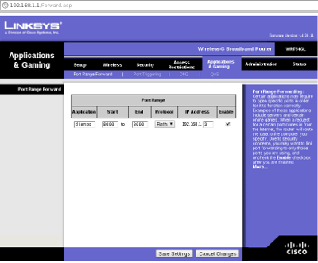

Make Django development server public
Published onSome months ago I was developing a Django application for my company. A week later my boss wanted me to show him the results. Unfortunatelly, he wasn't in the same city, so he had to access to my django web apps remotelly.
First, you have to know your local IP (inet addr). Use the terminal to get it if you wish.
$ ifconfig | grep 192.168
inet addr:192.168.1.3 Bcast:192.168.1.255 Mask:255.255.255.0
Now open your router administration. In my case the URL is http://192.168.1.1. Then go to Port forwarding, or any other section in which you can redirect the router ports to any other port of any computer connected to the local network. As you can see, I'm redirecting all petitions to port 8000 to my computer private IP port 8000.
{kind=link}
Run Django dev server. If you don't type the 0.0.0.0:8000 and type instead python manage.py runserver the server won't be visible outside your computer:
$ python manage.py runserver 0.0.0.0:8000
Validating models...
0 errors found
Django version 1.2.3, using settings 'ocproject.settings'
Development server is running at http://0.0.0.0:8000/
Quit the server with CONTROL-C.
Open other terminal window and get your public IP:
$ wget -q www.whatismyip.com/automation/n09230945.asp && cat n09230945.asp && rm -f n09230945.asp
218.218.128.9
Now open your browser with URL http://218.218.128.9:8000 and that's all!